In this graph, we structurize agruements of proof into vertices, in theory a node can be as big as you want but to make the proof feel simpler, you should make each node be a simple arguement,
The details of how to create and edit a node will be on the editor section the node can be drag and resize as freely as you want
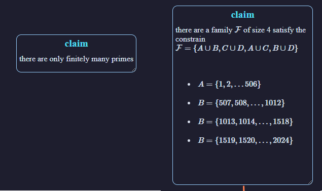
A simple node and a more complicated one
There are a total of five types of nodes
The given node, represent what were given by the problem statement
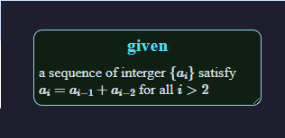
The definition node, defining the new terms and variables that use through out the proof
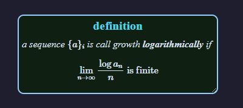
The lemma node, represent as a reusable statement that going to be use multiple times throughout the proof and have a clear input-output relationship
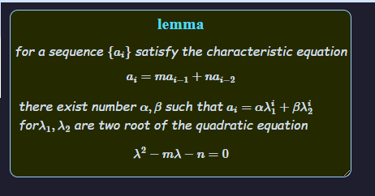
The claim node, which is the default node, it represent an arguement that only true given with some context, this is also the main building block of the proof
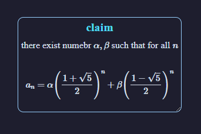
And finally, the conclusion node, represent the results one need to proof, or the variables they need to found as it demmand by the problem statement
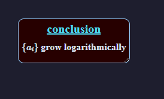
The node can also be referenced, and in that case, their border will change and their title will have a small icon at the begining.
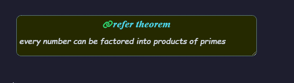
The names of the node
Each node can have a custom name (label) which is some string that does not start with '#' character
The label consist of two parts, the first few word is used to hint the program to use that node as the given type, and the rest are the label they intented to be,
Example: node named 'lemma foo12' will have name 'foo12' and type 'lemma'
if the node begin with either 'refer', 'reference', 'preliminary', 'premise', 'requires' it indicate that the node are being referenced and skip that first word, After that the program start to look for the set of hinted label, the full list of them are
The connection between parts of proof are represented as edges, To connect a node to other, right click the node you want to start the connection, choose reference and then left click the one you that want to connect to
We treat the graph created by the node and edges as directed acyclic graph, and node A connect to node B meaning that B using the result given after A were given
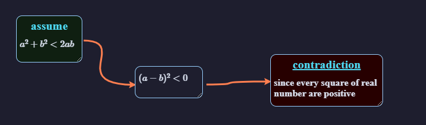
Example: connecting node with edges
Edges can be drag close to the cursor when you start dragging on them (a help cursor will appear to indicate that your cursor lie on an edge)
If for some reasons the edge connecting A to B is not fully displayed (for example B's parent has been zoomed in, B has been drag too far away from it's parent boundary) The edge connecting A and B will be hidden and a new edge that connect A and the nearest fully display parent of B will be made. We mark these type of edges as indirected, there might be many indirected edge share the same representation
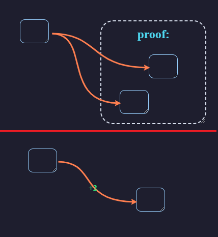
Example:indirected edges when some node is zommed-out
Zooming out a node
The actual proof may consist many claim and lemma, and a they might consist many other claims, to structurize this, we allow you to zoom in-and-out the node so that it can be structure more clearly. The limitation are only claim node and lemma node are zoomable
To zoom out a node, you can double click that node, and a small window will appear that consist of the arguements that were for that proof, which represent as the Children of that node, and to minimize that node, you can double click it again
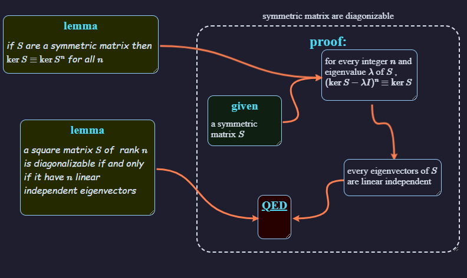
a proof that were structurized using zoomed nodes
You can navigate (scroll) the content inside by left clicking inside that window. To scroll the whole screen, using the middle click instead
Also, you can drag the window and resize them as freely as you want, however you need to click on the title of that node (which in this case appear with the content of the node when zooming in) in order to move that node,
When a node is zoom out, there will be some node that does not fit inside the window,and in this case the edge connecting them will be modify to one of the nodes' parent hence sometme form multiple edges. We indicate the number of node that is overflow by a small caption in the edge
We allow you to reference one node to the children of other node, however you can only reference such node to one of it's sibling descendant.
Focusing on a node
When the proof become bigger, the process of navigating through the proof will become more tedious, especially when someone want read the content inside a focused node but get confused with a lots of unnecessary references from other node
We allow you to replace one node to fit the whole screen by right-click a node and choose the option 'focus', we will replace the whole screen with node that you selected and bring all the node you reference outside of that node inside and tagged them with a red icon
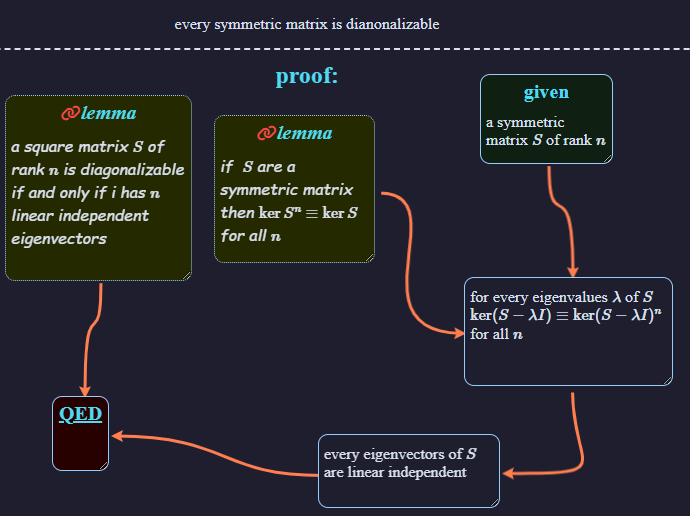
The previous proof when focusing in
You can navigate and return to the higher order proof by clicking one of the references at the top-left corner
Truncating nodes
To make the proof more clean, we allow you to hide the details of a node completely, to do that, right click a node and choose 'truncate'
We only allow truncate node that were the middle of some proof, in details nodes that it's descendant only reference from exactly one node that are not the descendant of the truncated node, furthermore the truncated node can only reference to exactly one other node.
When you truncate a node B lie between A and C (i.e. the proof originally are A -> B -> C) the node B and all edges connecting to one of it's descendant will dissapear and a new edge between A and C will be made
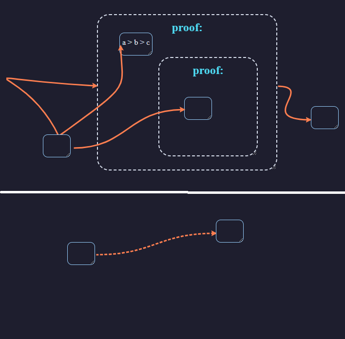
The proof before and after being truncated
We mark edges that represent the truncated node with dashed, ones can ctrl + click on them to remove the edge and make the truncated node appear again
The math editor:
To popup an editor, ctrl + click into the node you want to edit, if you did not clicked on any node, the program will create a new one as the child of the zoomed node directly beneath your cursor
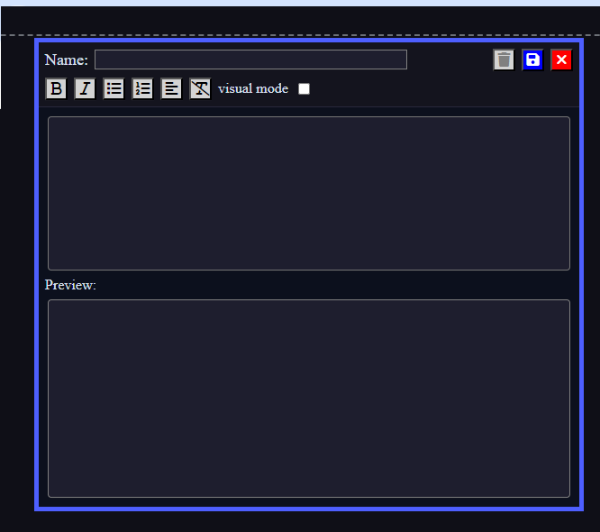
The editor
We use MathJax for rendering math in the webpage, for full references of mathjax, checkout this link
We use $ and $$ to indicate inline math and display math respectively, furthermore, there are some formatting command that we supported outside of mathjax, specifically
for bold text, insert text as \bf{text...}
for italic text, insert text as \it{text..}
for ordered list insert text as \enumurate{...} and denote each of the item with the \item command
for unordered list do the same as ordered list but this time, use \itemizecommand
We also support align equations when you click the button, the selected text must be a latex pre-processed text, then we chopped them down with the delimeter are relations equation which are grouped into categories
logical chaining:'\implies', '\iff'
less than relation:\le, <, \lessim, =
greater than relation:\ge, >, \gtrssim, =
equivalent relations:\equiv, \sim, =
The editor support two editiing mode, the text mode and the visual mode
Text mode
The text mode is the same as editting raw latex formula, they will be compiled each time you clicked the button
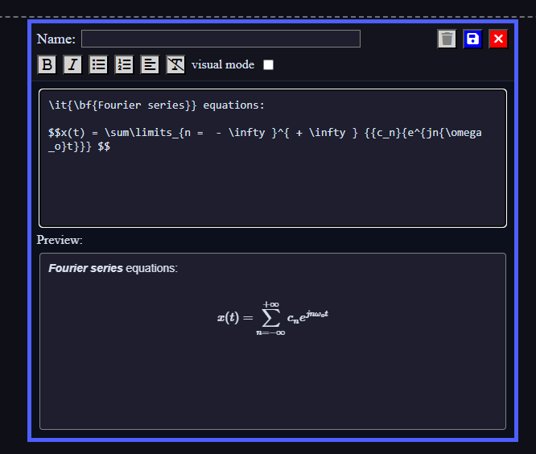
Editing using text mode
Visual mode
When using visual mode, when you start formatting text or enter the letters $ or {} a preprocessed section will appear, indicating with other color, the compilation process will happend each time you leave the preprocessed section
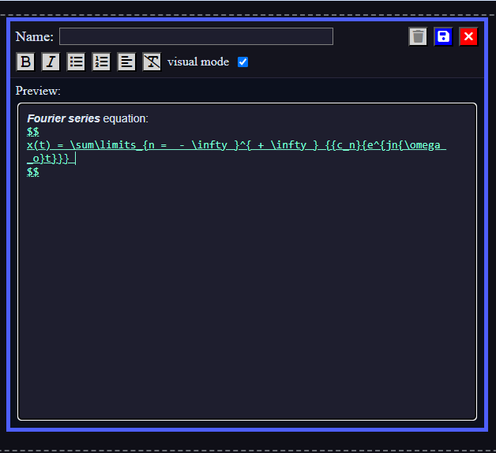
Editing with visual mode
For the ease of editing we recommend using the visual mode, however their might be some bug remaining which we fail to catch, in that case switch back to text mode and visual mode.
Save and read from file
To save or upload your custom proof using file, click the buttons at the top right corner, specifically:
for uploading proof
to download your proof to local file
to proof will be stored as a standard .tex file, and we indicate each node with the %% comment follow by information about the node, such as name, size, references.
The format of the node header comment is as follow
if you want to node to be truncated, append the # character to the start of the node's name. `top`, `left`, `height`, `width`, `zoomed height`, `zommed width` are not required as you can skip them entierly either by typing something that is not a number or leave them blank between the comma
since the name of the node are not requires, you can link the node in the references section by using the # sign, follow by the line number that have the header comment for that node. We discourage using this practice, as it might leave references become very hard to control
Other feature
The Node's right click menu
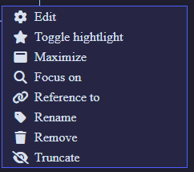
the right click menu of a node:
We have cover mostly the features of this menu including
the option remove and rename will do exactly as it labeled
For highlighting option, by default we will hightlight every node that you currently dragging, but that node will node be hightlighted anymore when you mouse are up, to make the node highlighted permanently click the button
The edge's right click menu
edges also have a right click menu
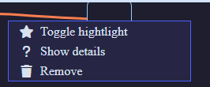
the right click menu for edges
The highlight option and remove option work the same. The show details option will remove that edge from being truncated which we have covered in here
History
You can undo and redo your most recent action by clicking the and that appear at the top right of the screen for undo and redo action respectively.
You can also undo and redo using the tradditional key combination ctrl+z and ctrl + y
This is the full list of all currently supported command
Make new edges
Remove edge
remove truncated edge
grabbing edge
create new node
drag node
zoom-in, zoom-out node
remove node
rename node
truncate node
navigating in the zommed node's window
focusing node
editing node
Epilogue
We hope that our program can make the user visualizing math better, hence learn math easier as well as have a better reputaion on math.
I have a special thank to francoisschwarzentruber and his project prooffold as well as Milan Cvitkovicarticle for heavily inspired me to make this project. Without them, this project might not has existed
Check out the playground right away and start create your own proof. Or visit this page page to see more examples
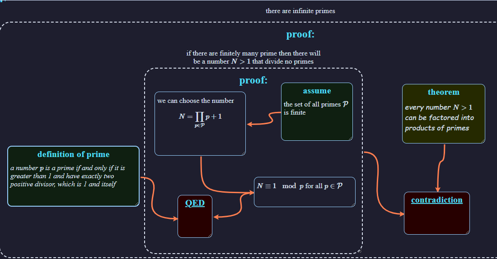
The screenshot of the example